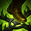
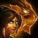

Q
JAVELIN TOSS / TAKEDOWN
V lidské podobě hodí Nidalee na cíl ostnatý oštěp, který způsobí tím větší poškození, čím déle letí. V podobě pumy se svým dalším útokem pokusí způsobit svému cíli smrtelné zranění; čím méně má cíl zdraví, tím větší poškození obdrží.

W
BUSHWHACK / POUNCE
V lidské podobě Nidalee nastraží past, která nic netušící nepřátele poškodí a odhalí jejich pozici. V podobě pumy se vrhne vpřed a při dopadu způsobí poškození nepřátelům v dosahu.
E
PRIMAL SURGE / SWIPE
V lidské podobě povolá Nidalee ducha pumy, čímž vyléčí spojenecké jednotky a po krátkou dobu jim zvýší rychlost útoků. V podobě pumy rychle zaútočí drápy ve zvoleném směru a způsobí poškození protivníkům před sebou.

R
ASPECT OF THE COUGAR
Nidalee se promění v pumu, čímž získá nové schopnosti.